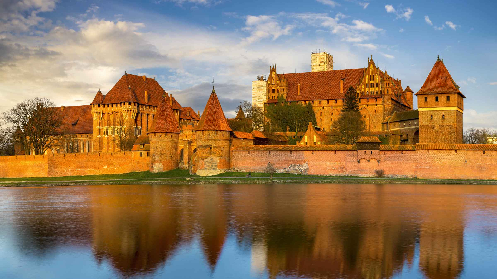
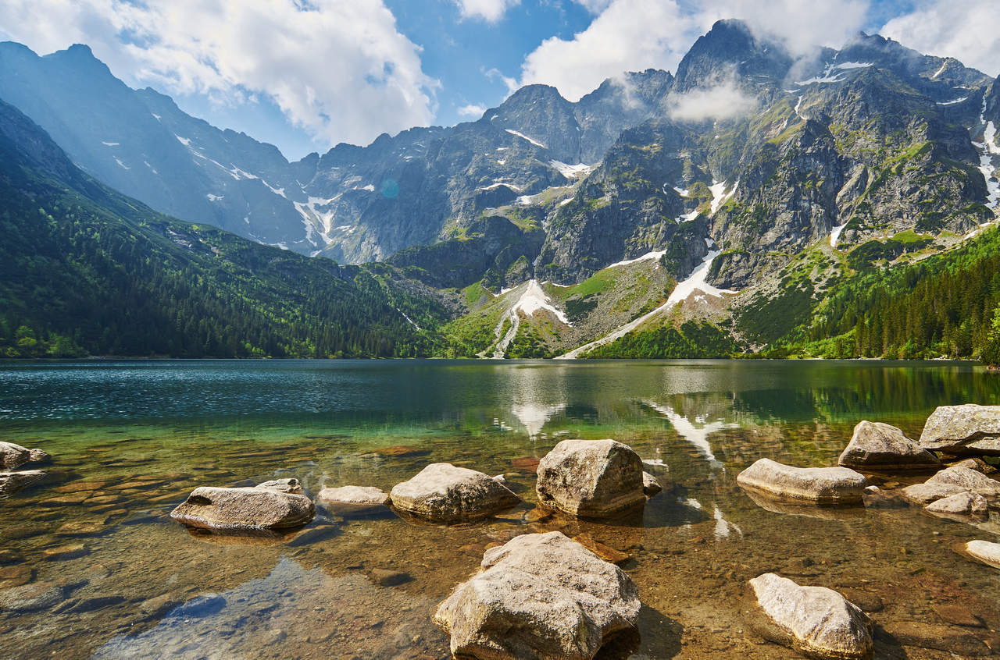

Polska to kraj o niezwykłej różnorodności krajobrazów i bogatej historii. Można tu znaleźć wysokie góry, piaszczyste plaże nad Bałtykiem, malownicze jeziora oraz piękne lasy i parki narodowe. Każdy region Polski ma coś wyjątkowego do zaoferowania.
Na tej stronie poznasz najciekawsze miejsca turystyczne w Polsce, takie jak Tatry, Mazury, Morze Bałtyckie czy zabytkowe miasta: Kraków, Warszawa i Gdańsk. Dowiesz się również, jakie atrakcje warto zobaczyć oraz jak ciekawie spędzić czas podczas podróży po naszym kraju.
Strona została przygotowana jako projekt szkolny z informatyki i ma na celu pokazanie, że Polska jest doskonałym miejscem do podróżowania i wypoczynku. Zapraszamy do odkrywania najpiękniejszych zakątków Polski!

